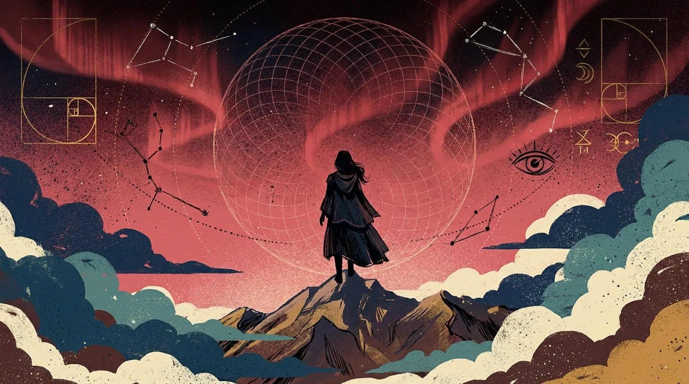
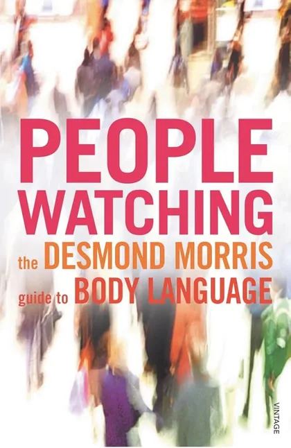
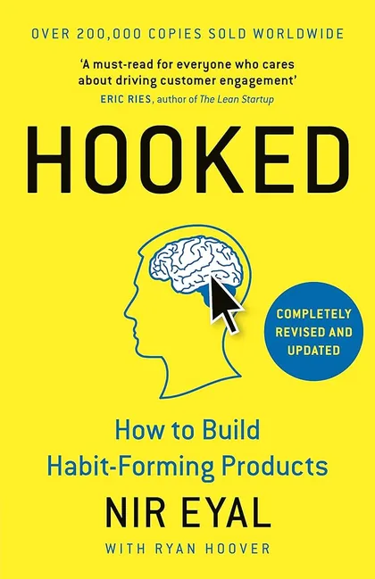
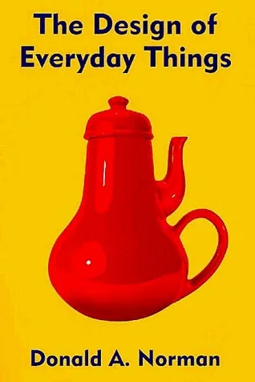
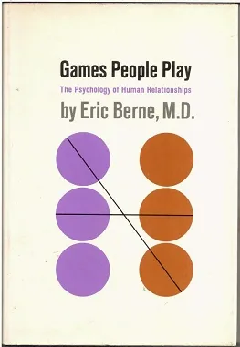
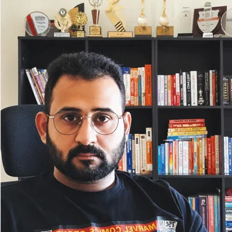
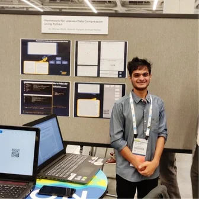

ShabnamRaghavan

- 3+ Years
- in high-stakes UX
- 3 Core
- products shipped end to end
- 1 Million
- monthly users impacted
I design for how people actually behave, even inside the most complex systems.
I am a sucker for human behaviour and psychology. These are some of the books which have changed the way I look at people.




Selected Works
87% of Support Tickets Were for a Page Users Never Found
IHX · In-product user management
87.5% reduction in user ops tickets · 30 min to 5 min self-serve
Read case studyAI Agents at Points of Human Friction
IHX · Agentic workflow design
Claim submission 5 min to 2 min · 7 AI product lines
Read case studyA Four-Bucket Layout Was Hiding a Two-Team Operation
IHX · Nucleus Ops dashboard
22,000+ providers · 33% increase in revenue per claim · 51% reduction in task time
Read case studyA Hospital App, Shipped in Three Weeks
IHX · Hospital-facing mobile app
9,500+ daily active users · 33% more client acquisition
Read case studyIdea to Shipped in Five Days
WiseWoman · Cycle-aware planner
5 days to ship · AI harness eval
Read case studyA Secure Way for Patients to Share Health Records
IHX OneHealth · B2C patient health record
Share documents with any provider, safely
Case study in progressHow I work
Design philosophy
I notice what others walk past: the small friction, the unspoken pattern, the system behind the screen.
I hold my work to evidence over applause. I like talking to users. That is where the real problems are, not in the brief. My design inspiration comes from the world around me and what I observe, the patterns I notice in people. I am curious about art, culture, and people.
The halo of Theyyam, the warp of a Malabar loom, and an eye that stays open for ground truths. Red is shakti: insight, spirit, inner strength. The circle is the universe and nothing at once, and a seeker never stops looking.
Design process
There is no one size fits all process. Every problem carries its own context, its own constraints, and its own definition of done. These five steps are the order I usually find them in.
What peers say
Drag the card away to read the next one.
Shabnam consistently brought clarity and simplicity to complex workflows, making our platform much more intuitive for hospitals and payers. Her attention to detail and ability to translate ideas into clean user journeys made a big difference.

Aditya Pathak Click to see the LinkedIn profile Founder and CEO, RXpressShabnam consistently delivered designs that were not just polished but also practical. She has a good eye for detail, keeps usability front and center, and pushes for experiences that feel smooth and intuitive.

Manas Malik Click to see the LinkedIn profile Technical Lead, IHXHer approach was highly data-driven, supported by strong market research. The impact was clear: her work drove real user engagement, simplified adoption, and added measurable value to our products.
Work history
-
Sole product designer for IHX Nucleus, serving 22,000+ healthcare providers and 35+ payers and TPAs.
- Led the UX for 7 AI product lines across the claims journey, from submission through to settlement.
- Designed premium operations features on a per-claim subscription. Average time to initiate settlement fell from 3.23 to 1.56 minutes, and per-claim monetization rose 33% on one enterprise hospital contract.
- Grew claim reconciliation into the Recon Hub, now covering every cashless credit line and recovering 25 to 30% of receivables that used to be reconciled by hand or skipped.
- Built an AI-assisted prototyping chain from Figma through to Claude, cutting concept to prototype from 10 to 15 working days down to 2 to 3.
-
- Led HMIS and HIS integration UX and its pilot across 5+ hospitals, cutting manual data entry errors by roughly 80% and pre-auth submission time from 8.0 to 6.8 minutes.
- Owned 2FA authentication UX and its rollout through ISO 27001 remediation, reaching 80% of claim-active hospitals.
- Built the Figma component library, taking frontend UI work from roughly 3 weeks down to 2 weeks per feature.
- Shipped a hospital-facing mobile app on a three-week deadline. It now has 9,500+ daily active users.
-
- Design for Tailorman, The August Co. and Miss Momo, alongside freelance clients, from 2017 to 2022.
- Moved into UX in 2023 on freelance work: redesigned the eCharge EV charging platform and ran usability testing on it.
Education
- 2013 to 2015MSc MicrobiologyVellore Institute of TechnologyElective coursework in Psychology and Cognitive Behavioural Genetics
- 2017Diploma in Fashion DesignJD Institute
- September 2026HFI Certified Usability Architect (CUA)Human Factors InternationalCoursework in accessibility and WCAG standards, usability heuristics, and research methods
Recognitions
- Sep 2025IHX Hackathon, 1st PlaceIHX
- 2023ADPList / Superdribbs UX Challenge, Top 3
- 2025IHX Acquisition RecognitionIHXMultiple product improvements acknowledged during the IHX acquisition by Perfios for adoption and operational value
The person behind the work
Curiosity about art, culture and people is where the design comes from. The longer story lives on the about page.
Get to know me